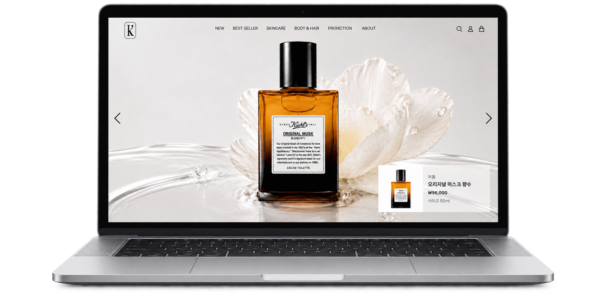
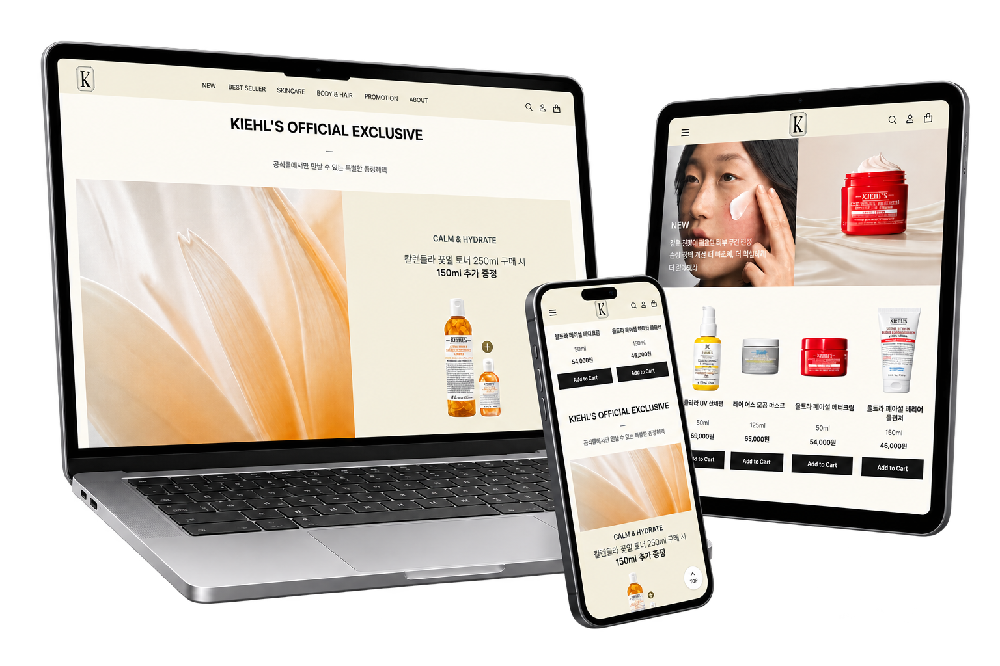
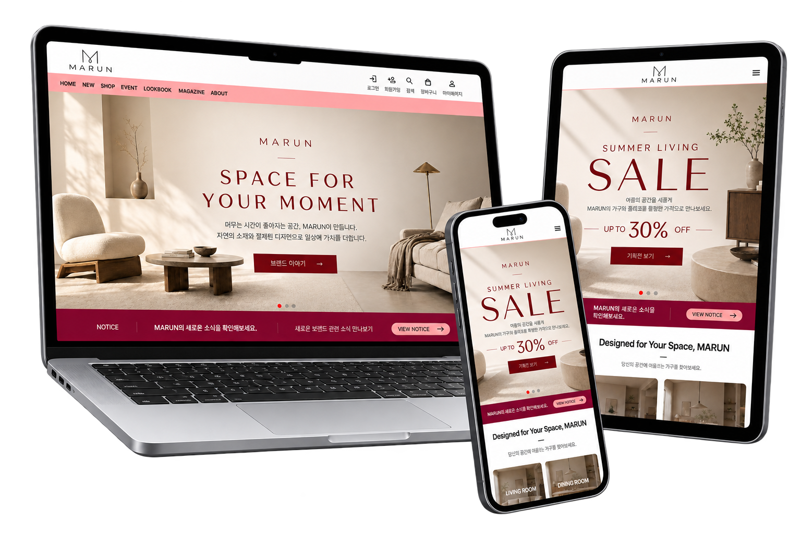

01
KIEHL’S WEBSITE REDESIGN


- 제작 기간
- 4주
- 참여 인원
- 3명
- 디자인 기여
- 헤더, 메인 페이지 - 신제품
- 웹 구현 기여
- 헤더, 푸터, 메인 페이지 전체, 베스트 셀러 페이지
- 사용 툴
- Figma, Git, Visual Studio Code, Codex
- 사용 언어
- HTML, CSS, JavaScript
MY ROLE
주로 웹사이트 구현 작업을 맡았고, 헤더와 메인 페이지 중 한 섹션의 디자인에도 참여했습니다.
또한 팀 리더로서 역할을 분담하고 다른 팀원이 작업한 코드가 잘 작동하는지, 반응형이 제대로 적용되었는지를 확인하고 수정하거나 Git과 Github를 활용해 각 파일을 연결시키는 작업을 수행했습니다.
HEADER
헤더는 기본 상태에서 배경을 투명하게 설정했습니다. 히어로 배너의 이미지가 헤더 영역까지 이어지도록 해, 화면을 넓고 몰입감 있게 보여주고자 했습니다.
헤더 뒤의 이미지에 따라 메뉴의 가독성이 낮아질 수 있기 때문에 마우스를 호버하거나 스크롤을 내리면 사이트의 메인 컬러가 배경색으로 나타나도록 구현했습니다.

모바일에서는 화면 폭이 제한되어 있기 때문에 가독성을 고려해 아코디언 메뉴 형태로 반응형 구현을 했습니다.
메뉴 버튼을 누르면 오버레이가 나오고, 아코디언 메가 메뉴는 화면보다 길어질 수 있기 때문에 오버레이 안에서 스크롤이 되도록 만들었습니다.
반응형 웹 구현

PC·태블릿·모바일 환경에 맞춰 레이아웃과 콘텐츠 배치가 조정되는 반응형 웹을 구현했습니다. 가로로 나열된 디자인이 많기 때문에 모바일 환경에서 콘텐츠를 확인하기 쉽도록 세로 또는 그리드 형식으로 만들어 가독성과 탐색 편의성을 높였습니다.
또한 기본적으로 가로 1024px, 768px를 기준으로 미디어 쿼리를 나누었지만 다양한 크기의 화면에서도 디자인이 의도대로 보일 수 있도록 필요한 경우 더 세부적인 breakpoint를 만들었습니다.
02
MARUN FURNITURE SHOP


- 제작 기간
- 4주
- 기여도
- 100% (개인 프로젝트)
- 사용 툴
- Figma, Git, Visual Studio Code, Codex
- 사용 언어
- HTML, CSS, JavaScript
Colors
#810B38
MARUN은 따뜻한 생활 공간을 떠올리게 하는 ‘마루’와 적갈색을 뜻하는 ‘Maroon’을 결합한 이름입니다. 이러한 브랜드의 의미를 담아 깊이 있는 적갈색을 메인 컬러로 선정했습니다. 나무 소재와 어우러지는 따뜻함과 차분한 고급스러움을 통해, 공간에 편안한 균형을 더하는 브랜드의 이미지를 표현했습니다.
Typography
- 메인 타이틀, 큰 제목
- 39px
- 콘텐츠 소제목 1
- 31px
- 콘텐츠 소제목 2
- 25px
- 콘텐츠 소제목 3
- 20px
- 본문, 기본 텍스트
- 16px
- 세부 설명 텍스트
- 13px
- 버튼, 소형 콘텐츠
- 10px
MARUN이 추구하는 차분하고 정돈된 분위기를 표현하기 위해 Pretendard를 사용했습니다. 간결한 산세리프 형태가 가구 이미지와 자연스럽게 어우러지며, 상품 정보와 긴 설명도 편안하게 읽을 수 있도록 돕습니다.
또한 다양한 굵기를 활용해 제목과 본문의 위계를 구분하고, 한글과 영문이 함께 쓰이는 화면에서도 일관된 인상을 유지했습니다.
반응형 웹 디자인

PC, 태블릿, 모바일 등 다양한 화면 크기에 맞춰 레이아웃이 유연하게 변화하는 반응형 웹으로 제작했습니다. 기기별로 콘텐츠 배치와 이미지 크기, 여백을 조정해 상품 정보의 가독성을 높이고, 작은 화면에서도 편리하게 탐색할 수 있도록 구성했습니다. 화면 크기가 달라져도 MARUN 특유의 차분한 분위기와 일관된 브랜드 경험이 유지되도록 디자인했습니다.